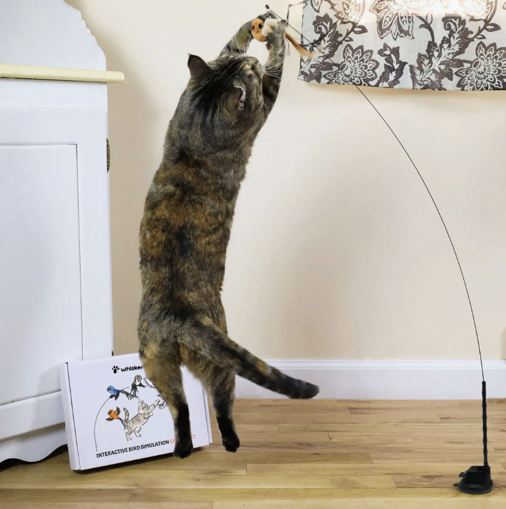
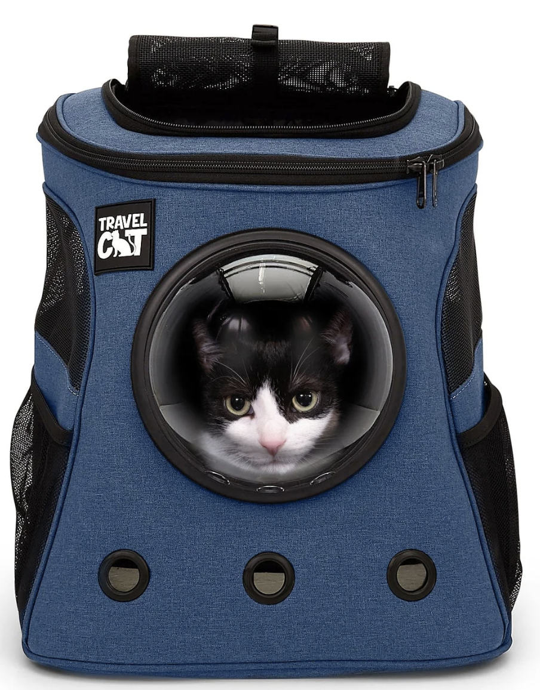
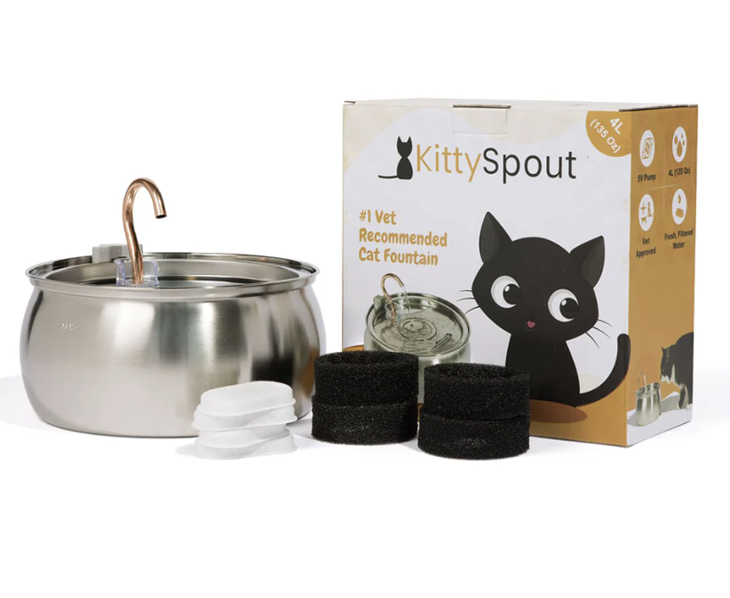
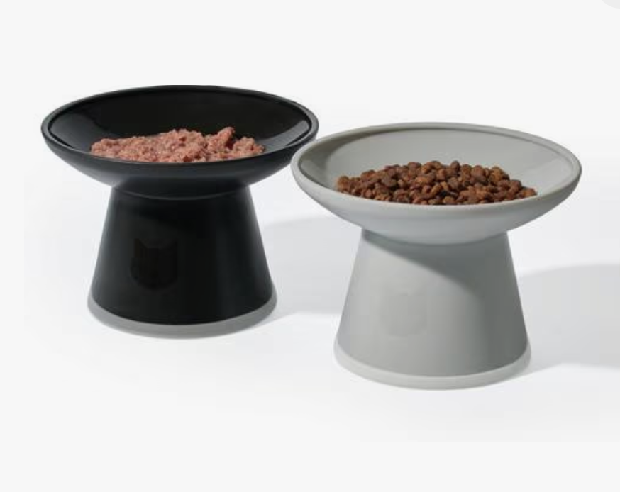
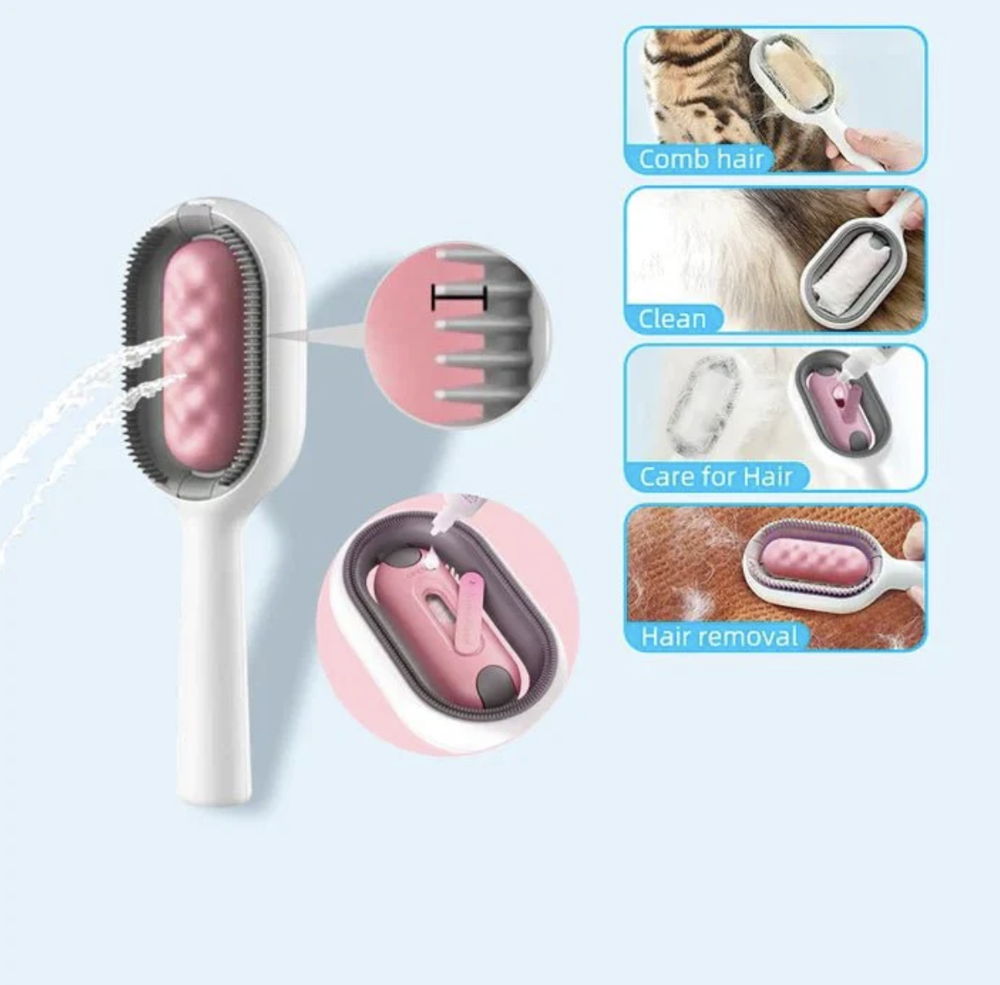
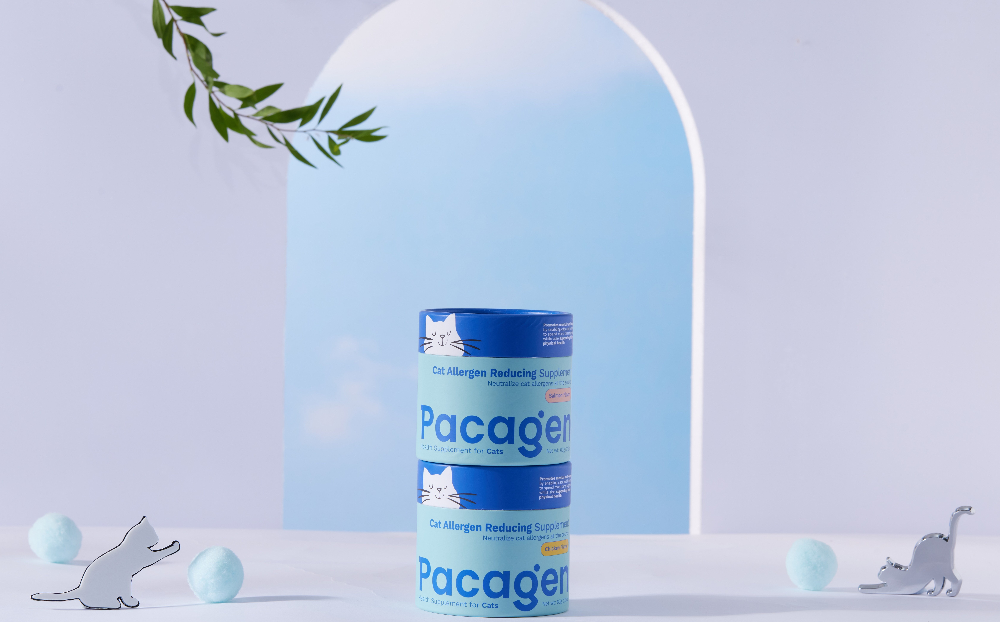
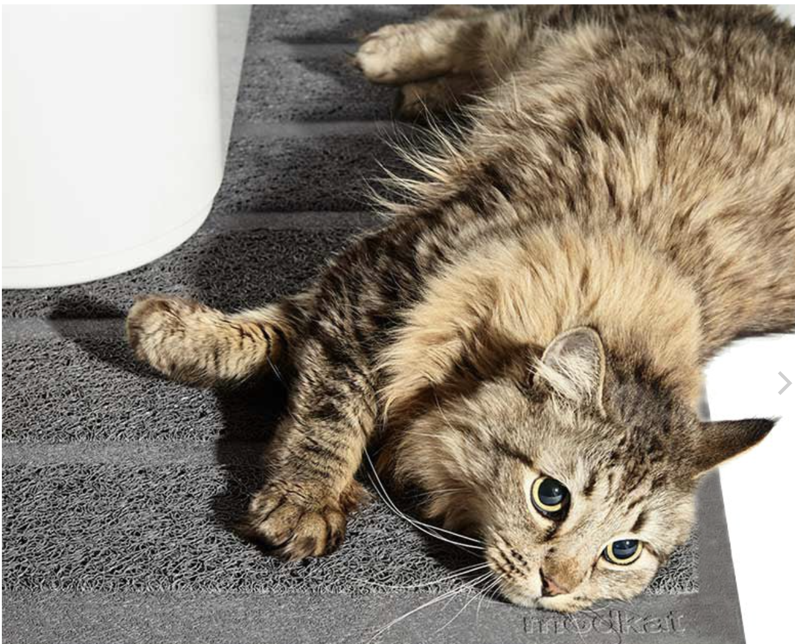
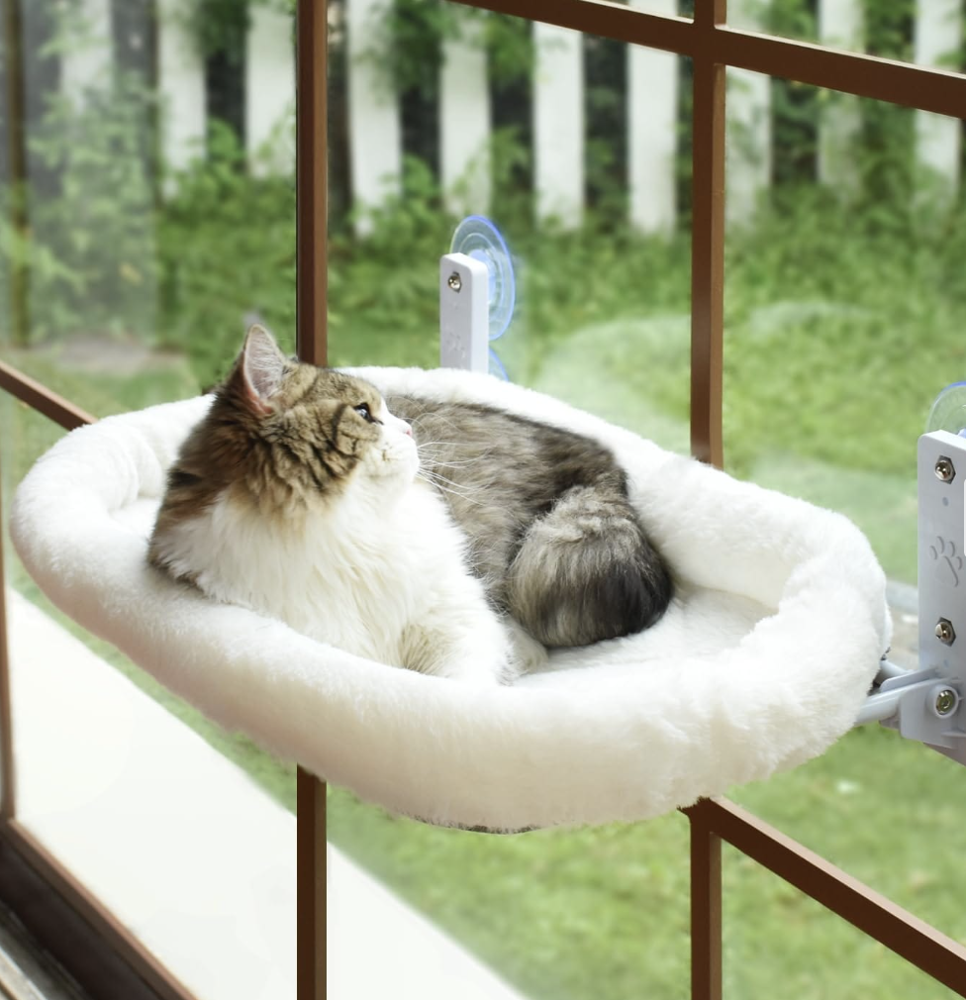
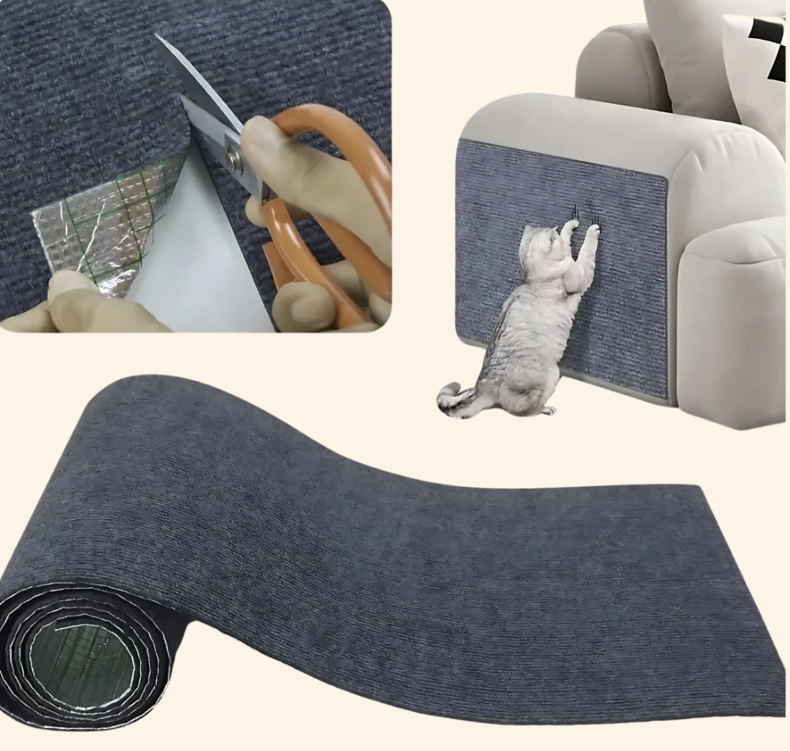

Courtesy of brand

The Interactive Toy
A slow-moving, battery-powered toy that keeps cats engaged even when no one's home. The kind that doesn't get ignored after five minutes and somehow stays interesting.

Courtesy of brand
The Carry-All Cat Bag
A structured, breathable carrier that makes vet visits, short trips, and travel days feel less chaotic. Once cats feel secure inside, leaving the house stops being such a production.

Courtesy of brand
The Water Fountain
A quiet, stainless steel fountain that encourages cats to drink more water. Less refilling, fewer spills, and noticeably better hydration.

Courtesy of brand
The Elevated Food Bowl
A simple raised bowl that's easier on a cat's neck and digestion. It also keeps feeding areas cleaner and looks nicer than expected.

Courtesy of brand
The Gentle Grooming Brush
A soft brush cats tolerate instead of immediately running away from. Regular grooming suddenly feels possible instead of stressful.

Courtesy of brand
Cat Allergen Reducing Supplement
A science-backed, pet-safe powder that you can mix into your cat's food to reduce the amount of cat allergens they spread. Drug-free, non-toxic, and supports cat gut health. Available in two flavors cats love: chicken and salmon. Safe for cats, adults, and children.

Courtesy of brand
The Low-Tracking Litter Mat
A textured mat that actually catches litter before it spreads across the house. One of those things you don't think about until you stop stepping on grit.

Courtesy of brand
The Cozy Window Perch
A secure perch that gives cats their favorite thing: a sunny spot to watch the world. It frees up the couch and instantly becomes their go-to place.

Courtesy of brand
The Scratch Pad That Saved the Couch
A simple scratcher placed exactly where the cat already wanted to scratch. Turns out placement matters more than design.